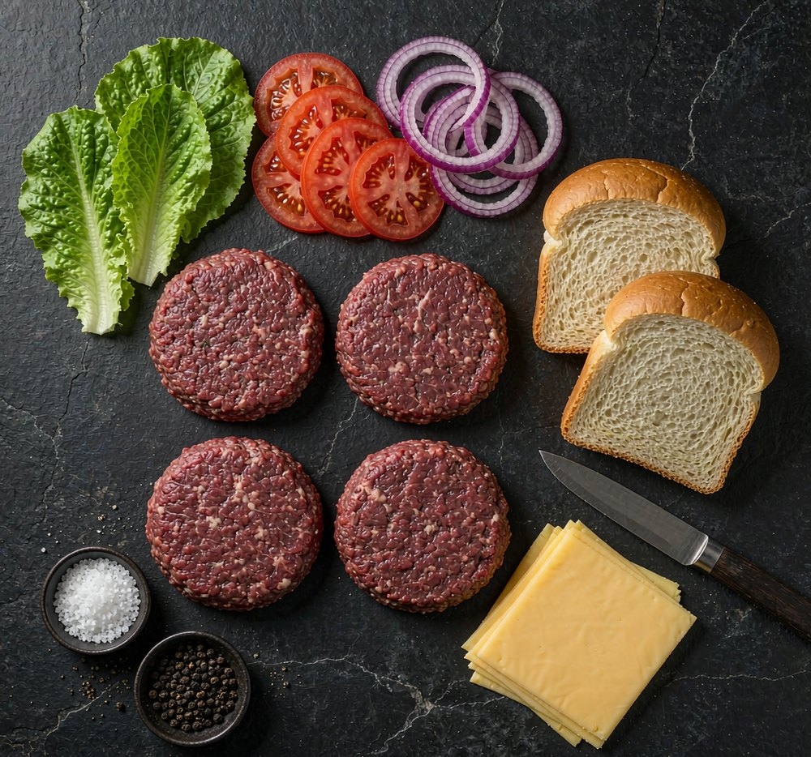
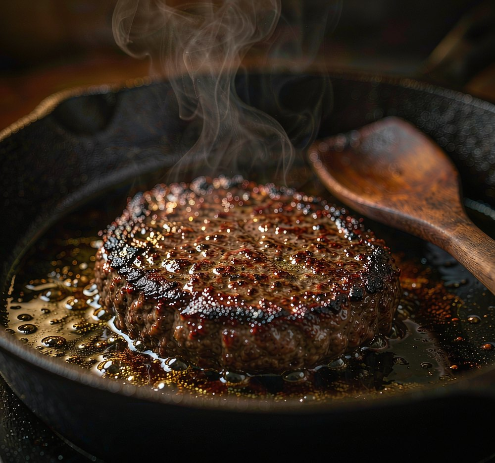
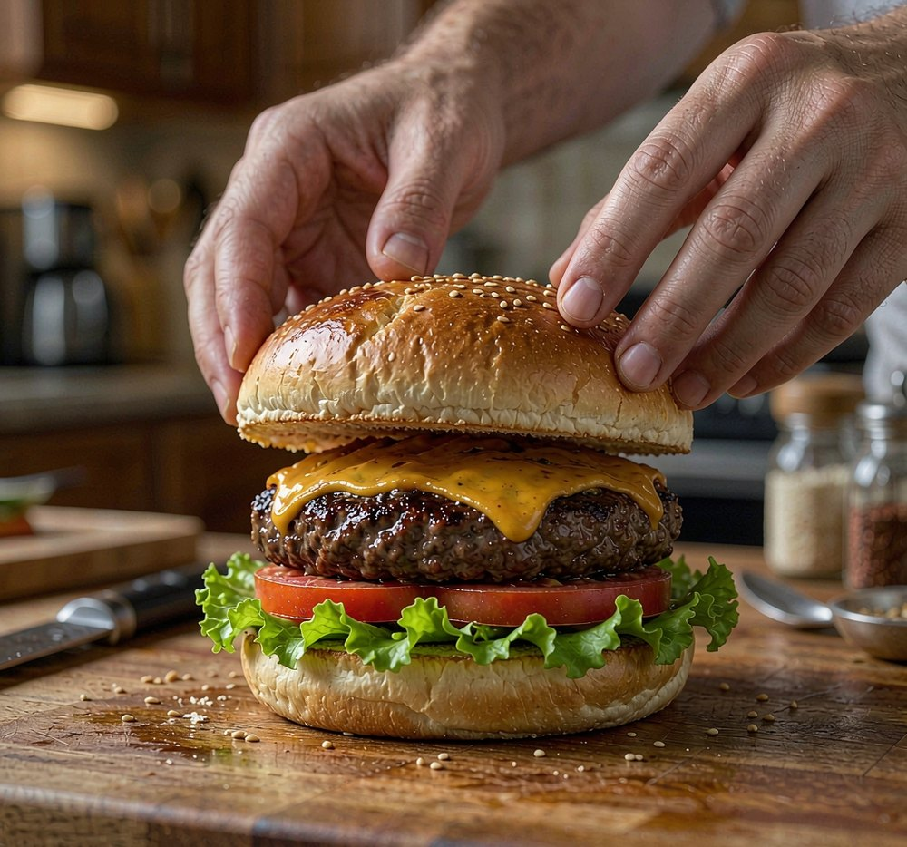

LESSON GOALS本课目标
② 学会 4 个提分句型：however + adj.、the moment、Having done、完全倒装 Then comes…
③ 能按照「步骤 + 原因」的结构，写出 150 词的操作说明，并口头复述 60 秒
PART 01课文原文
先通读一遍，不查词，只抓大意：作者做汉堡失败了几次？邻居给了他几条规则？
1For years I had been convinced that a good hamburger was simply a matter of good beef. I was wrong, and it took a rainy Sunday afternoon, a patient neighbour and three ruined patties to teach me otherwise.
2The first rule, my neighbour insisted, is to choose meat with enough fat — roughly one part fat to four parts lean. Lean meat, however expensive, will dry out the moment it touches the pan. Having shaped the mixture into balls, I was told to press them flat with my thumb, leaving a shallow dent in the middle; without it, the centre swells and the burger turns into a ball.
3Seasoning, too, is done at the last moment. Salt draws out moisture, so meat salted in advance loses the very juice we are trying to keep.

4Then comes the heat. The pan must be almost smoking before the patty goes in, and the patty must not be moved for three minutes. Every time you turn it, you lose a little of the crust that gives a burger its flavour. Once it is done, let it rest for a minute or two — impatient cooks cut it open at once and watch the juice run away.

5Finally, the bun: toasted, never cold. Bread, my neighbour observed, is not a container but part of the meal.

中文译文（建议读完两遍原文后再打开）
多年来我一直以为，一个好汉堡不过是"牛肉够好"的问题。我错了——是一个下雨的周日下午、一位耐心的邻居，还有三块煎废的肉饼，才让我明白并非如此。
邻居坚持说，第一条规则是选脂肪足够的肉——大致一份脂肪配四份瘦肉。瘦肉无论多贵，一碰锅就会变柴。把肉馅团成球之后，他让我用拇指把它们压扁，在中间留一个浅坑；没有这个坑，中心会鼓起来，汉堡就变成一个球了。
调味也要放在最后一刻。盐会逼出水分，所以提前腌过的肉，恰恰丢掉了我们想留住的那点肉汁。
接下来是火候。肉饼下锅前，锅必须热到几乎冒烟；下锅后三分钟内不能动它。每翻一次面，你都会损失一点赋予汉堡风味的焦壳。煎好之后，让它静置一两分钟——性急的厨师立刻切开，只能眼看着肉汁流走。
最后是面包：要烤过，绝不能是凉的。邻居说得好：面包不是容器，而是这顿饭的一部分。
PART 02核心词汇与语块
先记"搭配"而不是单个词：能直接说出口的，才是你的词。
| 词 / 语块 | 词性 | 释义与用法 |
|---|---|---|
| patty/ˈpæti/ | n. | （压成圆形的）肉饼 three ruined patties 三块煎废的肉饼 |
| lean/liːn/ | adj. | 瘦的（肉）；精瘦的。反义 fatty / rich lean meat dries out quickly. 瘦肉很容易变柴。 |
| dry out/draɪ aʊt/ | phr. v. | （完全）变干、变柴 The chicken will dry out if you overcook it. |
| dent/dent/ | n. / v. | 凹坑；使凹陷 a shallow dent in the middle 中间一个浅坑 |
| swell/swel/ | v. | 膨胀、鼓起（swell–swelled–swollen） The centre swells as it cooks. |
| seasoning/ˈsiːzənɪŋ/ | n. | 调味（品）；动词 season 调味 Season it just before cooking. |
| moisture/ˈmɔɪstʃə/ | n. | 水分、湿气（不可数） Salt draws out moisture. 盐会逼出水分。 |
| in advance/ɪn ədˈvɑːns/ | phr. | 提前、事先 salted in advance 提前腌过 |
| crust/krʌst/ | n. | （煎烤形成的）焦壳、外皮 a golden crust 金黄的焦壳 |
| flavour/ˈfleɪvə/ | n. | 风味、味道（英式拼写；美式 flavor） give it its flavour 赋予它风味 |
| let it rest/let ɪt rest/ | phr. | 静置（让肉汁回吸） Let the steak rest for five minutes. |
| at once/ət wʌns/ | phr. | 立刻；同时（注意双义） He cut it open at once. 他立刻切开了。 |
| toasted/ˈtəʊstɪd/ | adj. | 烤过的；动词 toast a toasted bun 烤过的面包 |
| a matter of/ə ˈmætər əv/ | phr. | ……的问题；取决于 It's simply a matter of practice. 只是练不练的问题。 |
PART 03语法与句型精讲
这 6 个结构，是本篇最值得"搬走"的东西。
过去完成时：为"后来才发现"埋伏笔
had been convinced 表示"在我发现自己错之前，我一直这么认为"——过去的过去。写经历类作文时，用它交代背景，再转折，句子立刻有层次。
it took sb + 时间/代价 + to do sth
it 是形式主语，真正的主语是后面的不定式。otherwise 意为"并非如此"，比 not 更书面。仿写：
It took me three failures to learn that lesson.
however + adj. = no matter how + adj.
however 引导让步状语时，后面紧跟形容词/副词，且常省略主语和 be：however expensive (it is)。注意与"然而"的 however 区分——这里它不在句首。
the moment / every time 充当连词
Every time you turn it, you lose a little of the crust…
名词短语直接作连词，等于 as soon as / whenever，口语和书面都高频。同类：the minute, the first time, next time。
Having done：先做的事，放在句首
完成式分词作状语，强调"塑形"发生在"压扁"之前，逻辑主语是 I（与主句主语一致）。后面 leaving a shallow dent 是现在分词作结果状语。
Then comes… ／ not A but B
Bread, my neighbour observed, is not a container but part of the meal.
方位/时间副词置于句首且主语在后时，用完全倒装（Then came the moment…）。not A but B 用于纠正认知，写作结尾金句很好用。
PART 04篇章结构：这类文章怎么搭
"good beef 就够了"——错误认知 + 代价（三次失败），读者立刻想知道正确答案。
选肉、塑形、调味。每条都是"怎么做 + 为什么"，原因句是这类说明文的灵魂。
The pan must be almost smoking… must not be moved… 短句 + 情态动词，节奏感强。
Bread is not a container but part of the meal. 从"操作"跳到"观念"。
写作可套用：误解 → 3–4 条规则（每条带原因）→ 一句观念性总结。
PART 05理解与语言练习
A. 判断正误（True / False）
1.The writer once believed that good beef alone makes a good hamburger.
2.Lean meat is a better choice because it has more flavour.
3.The dent in the middle keeps the patty from turning into a ball.
4.Salting the meat early helps it stay juicy.
5.The patty should be turned often so that it cooks evenly.
查看答案
B. 选词填空
however / the moment / in advance / rest / a matter of
1.Great coffee is largely fresh beans and clean water.
2. expensive the restaurant is, the food here tastes better.
3.Call me you land — I'll pick you up.
4.Book your tickets ; the show always sells out.
5.Let the dough for an hour before baking.
查看答案
C. 中译英（用上括号里的结构）
1.我花了三个小时才把这道菜做好。（it took…）
2.无论多贵，这台机器都值得买。（however + adj.）
3.把面团揉好之后，我把它放在温暖的地方。（Having done）
4.接下来是最后一步：把酱汁淋在上面。（完全倒装）
查看参考答案
2. However expensive it is, the machine is worth buying.
3. Having kneaded the dough, I left it in a warm place.
4. Then comes the last step: pour the sauce over it.
PART 06输出任务
150–180 词：How to make ______
任选其一：手冲咖啡 / 番茄炒蛋 / 你家乡的一道小吃。要求：
① 开头先写一个常见误解；② 至少 3 条"步骤 + 原因"；③ 用上 however、the moment、Having done 各一次；④ 结尾写一句观念性金句。
60 秒复述：不看原文，讲清 4 条规则
用连接词串起来：First… The key is… The moment you… Once it's done… Finally…
录音后自查三点：规则说全了吗？每条给出原因了吗？有没有用上 however / the moment？